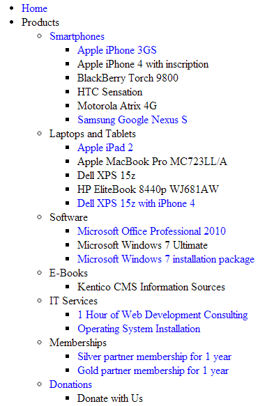

CMSUniView
The CMSUniView control allows you to display page data in a hierarchical structure.
Provides a built-in data source for loading Kentico pages. You do not need to write code for retrieving and binding the data.
Supports Kentico transformations, including hierarchical transformations.
Supports nested controls (See Using nested controls).
Inherits from: BasicUniView
Web part equivalent (portal engine): Universal viewer
Getting started
The following tutorial shows how to display all pages from the sample Corporate Site in a hierarchical structure using the CMSUniView control:
Create a new Web form in your web project.
Drag the CMSUniView control from the toolbox onto the form.
Set the following properties for the control:
Path: /%
LoadHierarchicalData: true
WhereCondition: NodeLevel > 0
Add the following code marked by the CMSUniView templates comments between the <cms:CMSUniView> tags. The overall code of the CMSUniView control should look like this:
<cms:CMSUniViewID="CMSUniView1"runat="server"Path="/%"LoadHierarchicalData="true"WhereCondition="NodeLevel > 0"><%-- CMSUniView templates ----------------------------------------------------------- --%><HeaderTemplate><ul></HeaderTemplate><FooterTemplate></ul></FooterTemplate><ItemTemplate><li><%# HTMLHelper.HTMLEncode(Convert.ToString(Eval("NodeName"))) %><cms:SubLevelPlaceHolderrunat="server"ID="plcSub"/></li></ItemTemplate><FirstItemTemplate><li><fontcolor="Blue"><%# HTMLHelper.HTMLEncode(Convert.ToString(Eval("NodeName"))) %></font><cms:SubLevelPlaceHolderrunat="server"ID="plcSub"/></li></FirstItemTemplate><LastItemTemplate><li><fontcolor="Blue"><%# HTMLHelper.HTMLEncode(Convert.ToString(Eval("NodeName"))) %></font><cms:SubLevelPlaceHolderrunat="server"ID="plcSub"/></li></LastItemTemplate><%-- CMSUniView templates ----------------------------------------------------------- --%></cms:CMSUniView>This example uses ItemTemplates to determine the design of the displayed pages. You can alternatively format the output using transformations.
The SubLevelPlaceHolder control specifies where child levels are placed in the output code. For items that have descendants in the hierarchy, the child level is rendered instead of the placeholder (including the header and footer template for the new level).
Save the web form.
Right-click the web form in the Solution explorer and select View in Browser.
The resulting page displays a hierarchical list of the website's pages.

Using hierarchical transformations
The following tutorial shows how to use a hierarchical transformation to format the output of the CMSUniView control. The example displays a hierarchical list of job openings (CMS.Job pages), offices (CMS.Office pages) and their categories (CMS.MenuItem pages) from the sample Corporate Site:
Create a new Web form in your web project.
Drag the CMSUniView control from the toolbox onto the form.
Set the following properties for the CMSUniView:
Path: /Company/%
ClassNames: CMS.Office;CMS.Job;CMS.MenuItem
LoadHierarchicalData: true
HierarchicalTransformationName: CMS.Job.HierarchicalJobsCareer
<cms:CMSUniView ID="CMSUniView1"runat="server"ClassNames="CMS.Office;CMS.Job;CMS.MenuItem"Path="/Company/%"LoadHierarchicalData="true"HierarchicalTransformationName="CMS.Job.HierarchicalJobsCareer"/>The hierarchical transformation contains individual transformations for all three page types.
Save the web form.
Right-click the web form in the Solution explorer and select View in Browser.
The resulting page displays the following hierarchical data:
Configuration
You can set the following properties for the CMSUniView control:
|
CMSUniView properties |
Description |
Sample value |
|
AlternatingRange |
Indicates how often the AlternatingItemTemplate should be used. (Inherited from UniView) |
|
|
AlternatingStartPosition |
Indicates the item number from which the AlternatingItemTemplate should start being used. (Inherited from UniView) |
|
|
DataBindByDefault |
Indicates whether the control automatically performs data binding during the Init event. (Inherited from BasicUniView) |
|
|
DataSource |
The object from which the list of data items is retrieved. (Inherited from BasicUniView) |
|
|
DataSourceControl |
Allows you to access the object of the data source control. |
|
|
DataSourceName |
ID of the data source control. |
|
|
DelayedLoading |
Indicates whether the control loads data during the Load event instead of the default Init event. |
|
|
EnablePaging |
Indicates whether the built-in UniPager control is used to for paging. If you wish to use paging, LoadHierarchicalData must be set to false (hierarchical data cannot be paged). |
|
|
HideControlForZeroRows |
Indicates whether the control should be hidden when no data is loaded. The default value is False. (Inherited from BasicUniView) |
|
|
HideHeaderAndFooterForSingleItem |
If enabled, the BasicUniView does not render the content of the HeaderTemplate and FooterTemplate for levels that only contain a single item. (Inherited from UniView) |
|
|
HierarchicalDisplayMode |
Sets the hierarchical display mode. Inner generates sub-levels inside the level above, Separate generates sub-levels outside of the upper levels. (Inherited from UniView) |
"Inner" |
|
ItemSeparatorValue |
HTML code that the control renders as a separator between the displayed items. This property has greater priority than the transformation assigned through the SeparatorTransformationName property. |
"<hr/>" |
|
LoadHierarchicalData |
Indicates whether the control uses a datasource modified to a hierarchical grouped dataset. If false, the control binds the page data in the default format (flat structure). |
|
|
NestedControlsID |
Enter the IDs of any nested controls (CMSRepeater, CMSDataList...), separated by semicolons. |
"CMSRepeaterNested;CMSDataListNested" |
|
OuterData |
Data generated in the HeaderTemplate and FooterTemplate. (Inherited from UniView) |
|
|
PageSize |
Sets the number of items displayed per page. |
|
|
PagerControl |
Allows you to access the internal UniPager control used for paging. |
|
|
PagerDataItem |
Gets or sets the pager data item object. (Inherited from UniView) |
|
|
PagerForceNumberOfResults |
If set, the DataSet containing paged items is not modified by the pager, but the pager itself behaves as if the amount of paged items were identical to this value. The value must be set to -1 for the property to be disabled. (Inherited from UniView) |
|
|
PagerPosition |
Sets the positions of the pager (relative to the displayed data). |
"Bottom" |
|
RelatedData |
Custom data connected to the object. (Inherited from BasicUniView) |
|
|
RelationColumnID |
Specifies the name of the column that the source data uses as an identifier (to determine parent-child relationships). (Inherited from BasicUniView) |
"NodeID" |
|
SelectedItemColumnName |
The name of the column that should be used for to find out which item is currently selected. (Inherited from UniView) |
"DocumentID" |
|
SelectedItemValue |
The item whose column specified by the SelectedItemColumn property matches the value of this property will be designated as the currently selected item. Typically, you will need to insert a Macro expression in order to dynamically retrieve the appropriate value from the current context. (Inherited from UniView) |
"{%currentpageinfo.documentid%}" |
|
ShowEditDeleteButtons |
Indicates if the control renders edit and delete buttons next to the displayed pages in editing modes (Page tab in the Pages application and On-site editing mode). |
|
|
Transformations |
Allows you to assign a HierarchicalTransformations object representing a hierarchical transformation. The BasicUniView renders the source data according to the hierarchical transformation (instead of the ItemTemplates). Note: To use a hierarchical transformation, you need to set the Transformations property before calling the BasicUniView's DataBind method. (Inherited from UniView) |
|
|
UseNearestItemForHeaderAndFooter |
Indicates whether the control provides data to the item templates (or transformations) that display the header and footer content. You can work with the data inside the code of the templates.
The control ignores this property if the OuterData property is set. (Inherited from UniView) |
|
|
UseHierarchicalOrder |
Indicates whether the control organizes the data according to the default hierarchical order. Only applies if LoadHierarchicalData is set to true. The default order value is "NodeLevel, NodeOrder". If you specify a value for the OrderBy property, the control appends it after the default order expression. |
|
|
ZeroRowsText |
Text shown if no records are found. This text is not visible when the control is hidden by the HideControlForZeroRows property. (Inherited from BasicUniView) |
"No records found." |
|
Page filtering properties |
Description |
Sample value |
|
CheckPermissions |
Indicates if the control checks the permissions of the user viewing the page. If the value is false (default value) no permissions are checked. If true, the control only loads pages for which the user viewing the page has read permissions. |
|
|
ClassNames |
Specifies which page types the control loads and displays. Identify page types through their code names, separated by semicolons (;). You can use the * wildcard as a substitute for any number of characters. For example Product.* includes the page types Product.Camera, Product.CellPhone, Product.Computer etc. If the property is left empty, the control retrieves all page types by default. In the case of menu and navigation controls, only CMS.MenuItem pages are loaded by default. Note: If the control loads all page types (empty value), only the data from the View_CMS_Tree_Joined and the COM_SKU table (for product pages) are available in the retrieved data. The specific fields of individual page types are not included. You need to keep this in mind when writing the code of transformations, WHERE conditions, ORDER BY expressions etc. |
"cms.news" |
|
CombineWithDefaultCulture |
Indicates whether the control loads pages from the website's default culture version if the required pages are not available in the user's selected culture. Only applies if you do not set the TreeProvider property manually. |
|
|
CultureCode |
Specifies the culture code of the pages that the control loads. If not specified, the control automatically uses the preferred culture of the user viewing the page. |
"en-us" |
|
DataSource |
Allows you to manually assign a DataSet or DataTable containing the pages that the control displays. You do not need to set this property for standard scenarios. |
|
|
FilterOutDuplicates |
Indicates if the control filters out duplicated (linked) pages from the data. |
|
|
MaxRelativeLevel |
Specifies the maximum number of content tree sub-levels from which the control displays pages. This number is relative, i.e. counted from the location of the page where the control is placed, not from the root of the website. Enter -1 to load all child pages. |
|
|
Path |
Path of the pages that the control loads. |
|
|
SelectOnlyPublished |
If enabled, the control only loads published pages. |
|
|
TreeProvider |
Gets or sets the TreeProvider object used by the control to access page data. If you do not assign a TreeProvider object, the control automatically creates a new instance. |
|
Page relationship properties |
Description |
Sample value |
|
RelationshipWithNodeGUID |
If set, the control only loads pages that are related to the page with the specified NodeGUID. You can find the Node GUID of pages on the Properties -> General tab in the Pages application. Enter "11111111-1111-1111-1111-111111111111" to dynamically load pages related to the current page. |
"36f8c4bc-f702-4736-8a25-a82295668794" |
|
RelatedNodeIsOnTheLeftSide |
Determines whether the page specified through the RelationshipWithNodeGUID property is on the left or right side of the relationship.
|
|
|
RelationshipName |
Specifies the type of the page relationship. Enter the code name of the relationship. |
"isrelatedto" |
|
CMS Base control properties |
Description |
Sample value |
|
CacheDependencies |
List of the cache keys on which the control's cached data depends. When the specified cache items change, the control clears its cache. Each item (dependency) must be on one line. If you leave this property empty, the control uses default dependencies. See also: Setting cache dependencies, Configuring caching |
cms.user|all |
|
CacheItemName |
Sets the name of the cache key used to store the control's content. If you leave the value empty, the system generates a default name containing variables, such as the control ID, the selected culture and the name of the user who loaded the page. The system cache is shared by all pages in your application, so cache item names representing different data must be unique globally. If you have multiple controls that load the same data, you can share the cache keys between the controls (optimizes loading of content and avoids redundant data in the cache). If the content displayed by the control depends on variables, such as URL parameters, you can set a custom name dynamically in the page's code behind. See also: Caching the data of page components, Configuring caching |
"CMSRepeaterNews" + |
|
CacheMinutes |
Sets the number of minutes for which the control caches content retrieved from the database.
Allows you to set up caching of content so that the control doesn't have to retrieve content from the database on each request. The caching mechanism uses absolute expiration time. This means that cache items expire after a specified time period even if the page containing the control wasn't requested. See also: Caching the data of page components, Configuring caching |
|
|
FilterControl |
Gets or sets the filter control used to limit the data read by the control. |
|
|
FilterName |
Gets or sets the code name of the filter control used to limit the data read by this control. |
|
|
OrderBy |
Gets or sets the ORDER BY clause of the SQL query that the control uses to load data. |
"NewsReleaseDate DESC" |
|
SelectedColumns |
Database table columns that the control loads for pages, separated by commas ( , ). If null or empty, the control loads all available columns. |
|
|
SiteName |
Specifies the code name of the Kentico website for which the control loads data. |
|
|
StopProcessing |
If true, the control stops all processing — does not load or display any data or other HTML output. |
|
|
TopN |
Specifies the maximum number of database records that the control loads. |
|
|
WhereCondition |
Gets or sets the WHERE clause of the SQL query that the control uses to loads data. |
"ProductPrice > 100" |
Defining the output format
You need to define the content rendered by the CMSUniView control through transformations or item templates (inherited from the UniView control).
Use the following CMSUniView properties to assign transformations. Specify transformation names in format: <page type code name>.<transformation name>
|
Transformation properties |
Description |
|
AlternatingTransformationName |
Applied to items that have an even position in the listing order. Every level in the hierarchy has its own separate alternation pattern. |
|
FirstTransformationName |
Applied to the first item on every level in the hierarchy. Only works for levels that contain more than one item. |
|
FooterTransformationName |
Rendered at the end of every level (after the last item on the level). Can be used to close encapsulating elements from the Header. |
|
HeaderTransformationName |
Rendered at the beginning of every level (before the first item on the level). Provides a convenient way to visually separate or style individual levels. |
|
HierarchicalTransformationName |
Assigns a hierarchical transformation. |
|
LastTransformationName |
Applied to the last item on every level in the hierarchy. Only works for levels that contain more than one item. |
|
SelectedFooterItemTransformationName |
Used for the footer of selected items. |
|
SelectedHeaderItemTransformationName |
Used for the header of selected items. |
|
SelectedItemTransformationName |
Applied to the currently selected item (i.e. the page that is being viewed). |
|
SeparatorTransformationName |
Rendered between items. If hierarchical data is loaded, the separator is placed only between items on the same level (i.e. not between a parent item and its child). |
|
SingleTransformationName |
Applied in cases where there is only one item on a level in the hierarchy. |
|
TransformationName |
Applied to all displayed items that are not covered by a specialized transformation type (e.g. alternating items, first items etc.). |
Setting the location of sublevels
If you are using the control to display hierarchical data, you can add a placeholder that specifies the position of sublevels inside the code of item transformations or templates:
For markup (Item templates and ASCX transformations):
<cms:SubLevelPlaceHolder runat="server" ID="plcSub" />For Text transformations:
{^SubLevelPlaceHolder^}
When displaying items that have descendants in the hierarchy, the placeholder is replaced by the child level under the given item (including the header and footer for the new level). If you do not add the placeholder, the system automatically renders child levels after the code of parent items.
Note: To use the sublevel placeholder, the HierarchicalDisplayMode property of the control must be set to Inner (this is the default state).
Configuring the pager
The CMSUniView control has a built-in UniPager that you can enable through the EnablePaging property. Define the following item templates within the CMSUniView tags to determine the design of the pager:
|
Template name |
Description |
Sample value |
|
PagerCurrentPageTemplate |
Template used for the current page in the pager. Use the following in-line code in the template:
|
|
|
PagerDirectPageTemplate |
Template used for direct page changing. Use a TextBox or DropDownList control with ID DirectPageControl to register the page change event. |
|
|
PagerFirstPageTemplate |
Template used for the link to the first page in the pager. Use <%# Eval("FirstURL") %> to get the link to the first page. |
|
|
PagerLastPageTemplate |
Template used for the link to the last page in the pager. Use <%# Eval("LastURL") %> to get the URL of the last page. |
|
|
PagerLayoutTemplate |
Template that determines the overall design of the pager. |
|
|
PagerNextGroupTemplate |
Template used for the link to the next group of pages. Use <%# Eval("NextGroupURL") %> to get the URL of the next group. |
|
|
PagerNextPageTemplate |
Template used for the link to the next page. Use <%# Eval("NextURL") %> to get the URL of the next page. |
|
|
PagerPageNumbersSeparatorTemplate |
Template used for the separator between page links in the pager. |
|
|
PagerPageNumbersTemplate |
Template used for page links in the pager. Use the following in-line code in the template:
|
|
|
PagerPreviousGroupTemplate |
Template used for the link to the previous group of pages. Use <%# Eval("PreviousGroupURL") %> to get the URL of the next group. |
|
|
PagerPreviousPageTemplate |
Template used for the link to the previous page. Use <%# Eval("PreviousURL") %> to get the URL of the next page. |
|